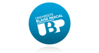

Konuralp YOLGECEN
Je conçois, modernise et fiabilise des applications web Symfony à fort enjeu métier. Mon approche combine architecture propre, refactoring pragmatique, intégrations API solides, performance mesurable et déploiements maîtrisés pour transformer un produit complexe en plateforme robuste, lisible et scalable.
expériences professionnales
Auto-entrepreneur (Freelance) / Développeur Full-Stack PHP Symfony
En tant que freelance spécialisé en PHP/Symfony, j’accompagne mes clients dans la création et l’amélioration de leurs solutions web sur mesure. Mon rôle va bien au-delà du développement :
✔ Développement d’applications robustes et évolutives, intégrant des architectures modernes
✔ Mise en place et optimisation de bases de données (MySQL, Elasticsearch)
✔ Intégration d’API tierces pour automatiser et enrichir les fonctionnalités
✔ Déploiement d’infrastructures DevOps avec Docker et CI/CD
✔ Conseil technique et accompagnement pour assurer la scalabilité et la performance des applications
Développeur Full-Stack PHP Symfony - Crop and Co
📍 Lyon, France (Depuis Février 2022)
Chez Crop and Co, j’interviens sur l’amélioration et l’évolution de OKAVEO, une plateforme SaaS spécialisée dans la gestion des achats pour les entreprises et institutions publiques. Mon rôle est de garantir la performance, la fiabilité et l'évolutivité de l’application en mettant en œuvre des solutions techniques adaptées aux besoins des utilisateurs.
🚀 Modernisation et refonte technique
- Migrations Symfony 4.4 → 5.4 puis 5.4 → 7.4 LTS, avec nettoyage des dépréciations, adaptation des bundles et sécurisation du socle applicatif
- Modernisation progressive du code legacy : typage, découpage des responsabilités, services plus explicites et réduction de la dette technique
- Optimisation des temps de réponse et réduction des requêtes coûteuses sur les parcours métier sensibles
- Refactorisation de composants critiques pour améliorer la maintenabilité, la testabilité et la lisibilité du domaine
🔗 Intégration et automatisation de services tiers
- Connexion à des API stratégiques : e-Attestations 365, Ellisphere, achat-public, Provigis, HappyOrNot, MARCO (Agysoft), SharePoint
- Mise en place de flux d’authentification sécurisés, de mapping de données et de traitements d’erreurs exploitables
- Développement de mécanismes d’import, synchronisation et reprise pour fiabiliser les échanges entre systèmes
📦 Développement de nouveaux modules
- Conception et développement du module "Commandes" basé sur les BPU (Bordereaux de Prix Unitaire), fournisseurs, contrats et règles métier
- Création d’interfaces dynamiques pour fluidifier la gestion des commandes et réduire les actions manuelles
- Implémentation de règles de calcul, validation et contrôle pour sécuriser les workflows achats
📊 Traitement et exploitation des données
- Automatisation d’exports de données personnalisés via MySQL pour l’analyse métier et le pilotage opérationnel
- Développement de tableaux de bord et indicateurs pour rendre les KPI plus accessibles aux utilisateurs métiers
- Optimisation de requêtes, indexation ciblée et analyse des volumes pour accélérer les traitements critiques
⚡ Agilité, maintenance et amélioration continue
- Approche Agile Scrum, en collaboration avec 1 CTO, 1 PO, 1 QA et 5 développeurs (dont 1 Lead)
- Correction de bugs, analyse d’incidents et optimisation continue pour stabiliser l’expérience utilisateur
- Déploiements CI/CD via GitLab, revues de code et coordination avec la QA pour fiabiliser les mises en production
Développeur Full-Stack PHP Symfony - Crop and Co (Alternance & CDI)
J’ai intégré Crop and Co en tant qu’alternant développeur Full-Stack PHP Symfony avant d’évoluer vers un CDI. J’ai participé au développement et à l’optimisation de OKAVEO, un outil SaaS dédié à la gestion des achats pour des entreprises privées, publiques et hôpitaux.
🚀 Formation, montée en compétences et évolution
- Début en alternance avec une immersion complète dans un projet en production
- Progression vers un CDI en raison de mes contributions et de mon expertise technique
- Participation à des revues de code et amélioration des bonnes pratiques de développement
⚡ Modernisation et refonte technique
- Migration Symfony 3.4 → 4.4, refonte et amélioration des performances de l’application
- Optimisation du code legacy, amélioration des temps de réponse et réduction des requêtes coûteuses
🔗 Infrastructure et déploiement
- Création et gestion d’un environnement de staging avec Deployer
- Automatisation des déploiements CI/CD via GitLab
📊 Big Data et optimisation des performances
- Gestion des volumes de données massifs avec Elasticsearch et amélioration des requêtes
- Création de tableaux de bord analytiques et mise en place d’indicateurs BI via ETL et Data Warehousing
🔧 Administration et optimisation des bases de données
- Maintenance et optimisation des bases de données MySQL
- Implémentation d’indexation avancée pour accélérer les performances
.jpg)
.jpg)
.jpg)
.jpg)
Volontaire en mission I.C.T. (Information Communication Technologie)
🔧 Missions principales
- Déploiement des infrastructures réseau et télécommunications au Groupama Stadium
- Support technique et maintenance informatique pour les équipes et le personnel FIFA
- Gestion des équipements informatiques et résolution des incidents techniques
Modèle
🎯 Missions principales
- Accueil et conseil client, gestion des ventes
- Merchandising, gestion des stocks et mise en rayon
- Représentation de l’image de marque en tant que modèle en magasin
Volontaire en mission I.C.T. (Information Communication Technologie)
🔧 Missions principales
- Installation et maintenance des équipements informatiques pour l’événement
- Support technique et gestion des incidents pour les équipes opérationnelles
- Déploiement et configuration des réseaux et télécommunications
Evènementiel - Animation commerciale
Diverses missions courtes en tant qu'animateur ou hôte d'accueil
Chef de service - Chef de caisse
Chef de caisse et de service au port du ferry et à bord du ferry reliant Bursa\Istanbul
Formations
C.E.S.I. | Lyon
Formation en contrat de professionnalisation selon un rythme trois semaines à l'entreprise une semaine à l'école.
- Gestion des architectures logicielles et conception de systèmes d’information
- Implémentation des bonnes pratiques DevOps et intégration de CI/CD
- Optimisation des performances des applications et gestion des bases de données
- Méthodologies Agile, Scrum et Kanban appliquées aux projets IT
C.E.S.I. | Ecully LYON
Formation en contrat de professionnalisation selon un rythme trois semaines à l'entreprise une semaine à l'école.
- Développement avancé en PHP, Symfony et JavaScript
- Conception et gestion de bases de données relationnelles et NoSQL
- Approfondissement des principes de Software Craftsmanship et Clean Code
- Développement d’applications avec modèle MVC et microservices
Université Clermont Auvergne | Clermont-Ferrand
- Fondamentaux de la programmation et des algorithmes avancés
- Théorie des langages, Programmation Orienté Objet
- Introduction à l’administration Linux, Arhitecture et réseaux
- Développement web : HTML, CSS, JavaScript et frameworks
- Base de données : MySQL et gestion des transactions

Université Blaise Pascal | Clermont-Ferrand
🎓 Diplômes obtenus: A1 (2012-2013 (S2)) / A2 / B1 / B2
CAVILAM Alliance Française | Vichy
🎓 Certification du niveau A1.1
Lycée Ahmet Rustu | Bursa/TURQUIE
Compétences
try {
buildLikeApple();
} catch (LegacyCodeException $e) {
refactorLikeAConsultant();
}- :
-

-
.png "jQuery")
- :
- :
-

-

-
FrançaisCourantTurcLangue maternelleAnglaisIntermédiaire
Centres d'intérêt
- Passionné de football, à la fois pratiquant et spectateur
- Suivi des grandes compétitions internationales et locales
- Pratique régulière du fitness pour discipline et persévérance
- Intérêt pour la nutrition sportive et le bien-être physique
- Suivi des tendances tech et innovations en développement web
- Lecture de blogs spécialisés et participation à des conférences
- Intérêt pour les biographies d'entrepreneurs et success stories
- Grand amateur de films et documentaires, notamment dans le domaine technologique
- Exploration de nouvelles cultures à travers le cinéma
- Voyages dans plusieurs pays : France, Suisse, Allemagne, Hongrie, Slovaquie, Autriche, Croatie, Italie, Grèce, Turquie, Russie, Ukraine, Roumanie, Thaïlande, Maldives
- Découverte des traditions, gastronomies et modes de vie locaux
- Écoute variée : musique classique, pop, électro et rap
- Découverte de nouveaux artistes et genres musicaux